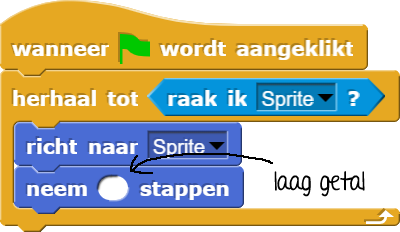
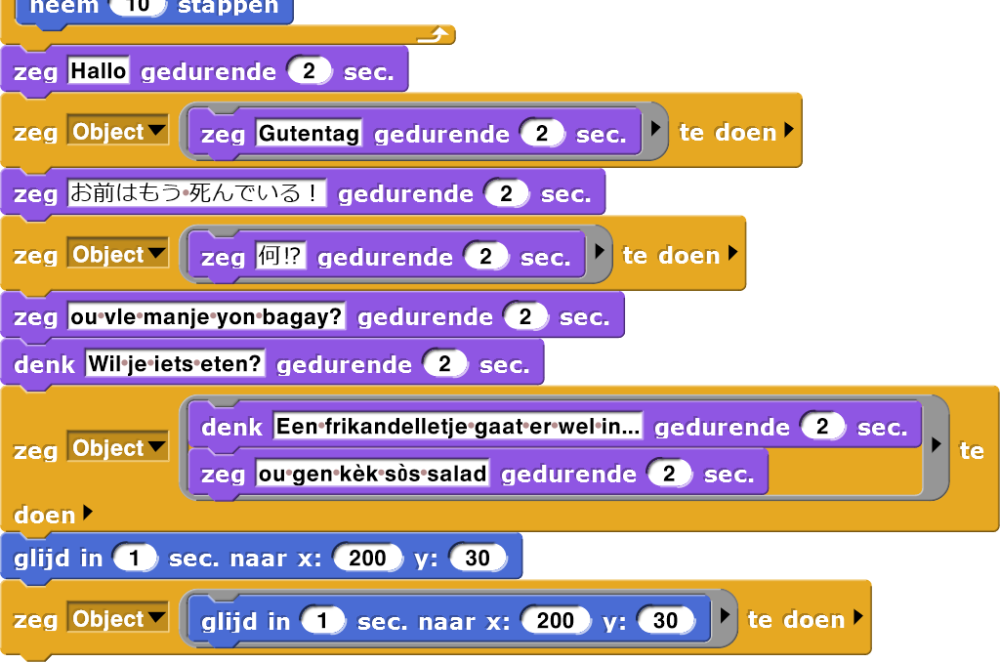
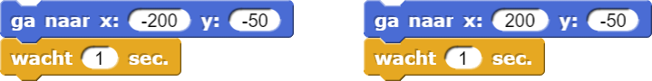
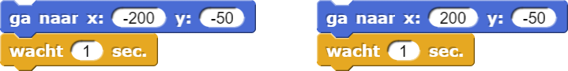

Sprite die een sprite volgt
Op deze pagina ga je het script van de tweede sprite zo aanpassen dat de sprites niet permanent blijven
bewegen, maar de bewegingen zich alleen herhalen_tot de sprites elkaar raken.
- Pas de code van Sprite(2) aan zodat hij naar Sprite wijst totdat hij Sprite aanraakt. De
instructies en animatie hieronder laten zien hoe.
- Selecteer Sprite(2) door op zijn knop te klikken onder het speelveld.
- Vervang het
herhaalblok door eenherhaal_totblok. - Ga naar het Waarnemen-palet en sleep
in de zeshoekige ruimte van het
herhaal_totblok.
Stel het blok in om de beweging te herhalen, totdat de eerste Sprite geraakt wordt.
- Doe hetzelfde voor de eerste Sprite. Vervang de code zodat hij alleen je muis volgt totdat hij Sprite(2) raakt.
- Test je programma om te kijken of het doet wat je wilt:
- Als je klikt op de groene vlag, zou de eerste Sprite je muis moeten volgen en Sprite(2) zou naar Sprite moeten wijzen.
- Als je Sprite voldoende dichtbij Sprite(2) brengt, zouden beide sprites moeten stoppen met bewegen.
- Tot nu toe wijst Sprite(2) naar Sprite, maar hij beweegt niet naar Sprite toe.
Voeg een regel code toe aan het script van Sprite(2) zodat hij Sprite achtervolgt.
Dit is het idee:
Vul een laag getal in bij het invoerveld van hetneem .. stappenblok (waarschijnlijk minder dan 1), zodat Sprite(2) niet te snel bij Sprite is. - Test je programma een paar keer.
-
Als de sprites elkaar tegenkomen, stoppen ze op dit moment alleen maar. Laat ze nu ook een praatje maken als ze stoppen. Je kan dit doen door code toe te voegen aan het script van Sprite(2). Bedenk zelf wat ze moeten zeggen.
Sprite(2) doet dingen zelf. Hij vertelt ook aan Sprite wanneer hij wat moet doen. Deze code geeft Sprite(2) de leiding over Sprite.
Om te voorkomen dat de twee sprites aan elkaar vast komen te zitten en niet meer kunnen bewegen, hebben de sprites wat ruimte tussen elkaar nodig en wat extra tijd voordat de achtervolging begint. Blokken zoals deze helpen daarbij.


- Geef de sprites een ander uiterlijk.
.png plaatjes
Je kan een plaatje van het internet gebruiken door het plaatje in het Uiterlijken-menu te slepen van de Sprite. Zorg wel voor een .png plaatje zonder achtergrondkleur. Geef in Google de toevoeging filetype:png aan je zoekopdracht. De achtergrondkleur in Google moet dan geblokt zijn in plaats van wit. Klik op dit voorbeeld. - Verander ook de achtergrond van het speelveld.